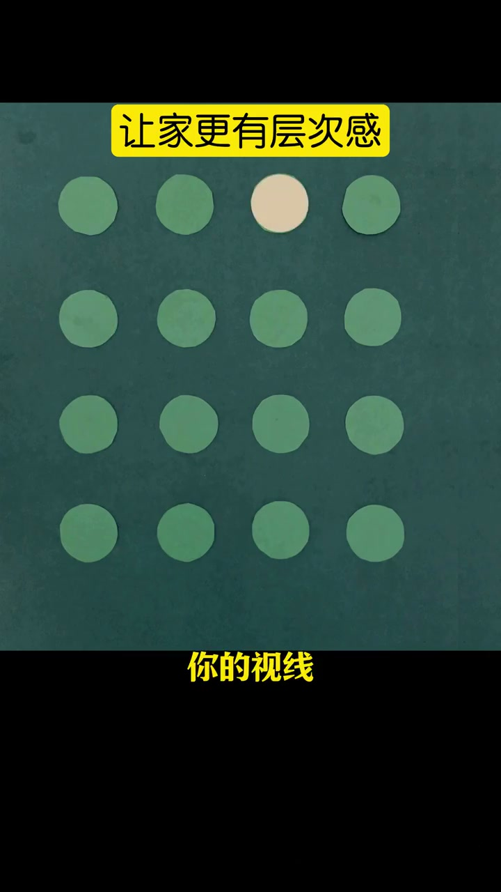
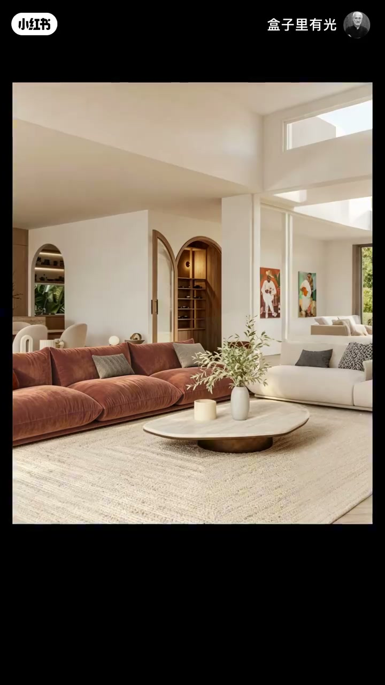
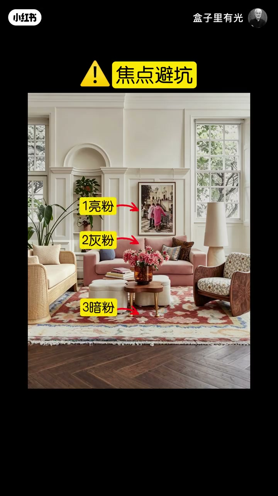
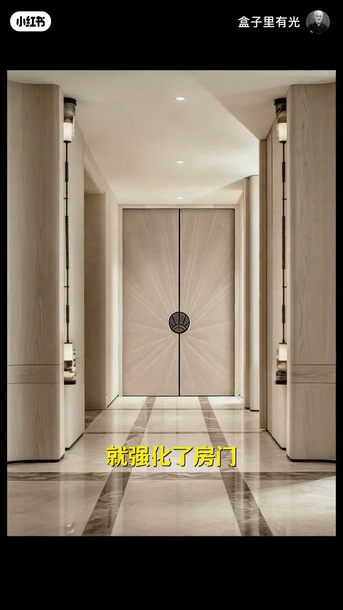
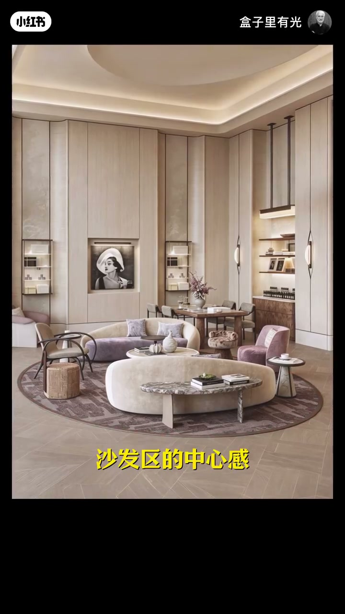

内容要点
同一作者把「家里太单调」拆成点、线、面三层造焦点：不一样的点（如黄沙发）建立主次；线条把视线导向入口与门；地毯、背景与屏风用「面」收拢中心区。每层都有避坑——焦点色不能孤立、线条终点不能空、背景只衬托勿抢戏。
知识结构
一律圆点无焦点；出现异色点视线跟走。米色屋换黄沙发立刻有主次；同色系至少三点明暗过渡才协调。
线条指向某点可强化焦点；地面与门扇汇聚线加强入口仪式感；终点不能空，圆桌可接住线条。
加背景面强化中心区；地毯收拢零散家具；屏风划定书桌私密范围；背景色跟主体，避免抢眼生硬。
单调往往不是缺家具，而是缺焦点层级：先用差异点建立主次，再用线条引导，最后用面收拢区域。落地时检查三点——同色系有没有过渡、线条终点有没有被接住、背景有没有压过主体。
00:00-00:31点：异色点 + 黄沙发主次 + 同色系三点过渡
开场用圆点板立题：很多个一样的圆点，你不知道看哪个；出现一个不同的点，视线就会跟着走——眼睛总愿意看不一样的东西，焦点一立，画面就不单调。00:05 15 个浅绿点中独一米色点，把「差异=焦点」演示得极简。
家装落地：家具全米色缺层次，换一个黄色沙发立刻有主次。但焦点色不能只有一个——单只粉沙发会不协调，起码要有三个同色系物件做明暗过渡。00:28「焦点避坑」页用亮粉/灰粉/暗粉三点标注，把「至少一个焦点色」升级成「同色系过渡」。



00:31-01:08线：指向焦点；入口汇聚；终点不能空
若单点不够明显，就用线条强化：线条指向一个点，视线被引过去，该点就变成焦点。入口太平淡时，地面加线可强化引导与代入感；门上也加向中心汇聚的线，能把视线锁定在门上，强化房门与内部空间的仪式感。00:55 对称长廊尽端放射纹门扇，正是「汇聚锁定」的实景。
硬边界：线条指向的位置不能是空的，否则有缺失感——加入圆桌接住线条，同时强化视觉中心。

01:08-01:43面：地毯/屏风造中心；背景只衬托
点线不够时，用「面」强化中心区：给区域加背景，中心就被托出来。家具零散混在一起时，加地毯收拢并强化沙发区中心感；书桌边界不清则加屏风，独立范围带来私密与踏实。01:25「沙发区的中心感」圆形地毯是「面收拢」的典型帧。
片尾避坑：背景只是衬托，太抢眼会生硬不协调；改成与主体同色，才能柔和协调地完成衬托任务。

完整转录（16段）
以下文本由 Whisper medium 模型自动转录，可能存在少量识别误差，已尽可能修正。
你看 这有很多个一样的原点 你不知道该看哪个 当出现一个不同的点 你的视线就会跟着他走
因为眼睛总是愿意看不一样的东西 那有了这个焦点画面就不单调了
家具都是米色 房间就很单调 缺少层次感 换一个黄色沙发 房间马上就有了主次区分
就弱化了单调感 那焦点的颜色不能只有一个 只有一个粉色沙发就会显得很不协调
起码要有三个同色系的东西 现在有了明暗的过渡 整体就会更协调
如果你觉得单个的点不够明显 还可以用线条来强化效果
加入线条指向一个点 线条会把你的视线引向这个点 它就变成了焦点 入口设计太平淡 缺少引导性和仪式感
地面加上线条就强化了引导性和代入感
在门上也加入线条 向中间汇聚的线条 能把你的视线锁定在门上就强化了房门和内部空间的仪式感
那线条指向的位置呢 不能是空的 要么就会有一种缺失感
加入圆桌 桌子接住了线条 还强化出了视觉中心 如果你觉得点和线的方法还是不够明显
那我们还可以用面来强化中心区域 在一个区域加上背景 这个区域就被强化出了一个中心区域
家具摆放太零散 全部混在一起 没有主次区分 加入地毯 地毯收拢了零散的家具
还强化出了沙发区的中心感 书桌区的边界不清晰 感觉很不踏实 加入屏风
屏风强化了独立的范围 就有了私密感和踏实感 那背景版只是衬托 太抢眼就会生硬不协调
改成跟主体相同的颜色 既能衬托主体 又能显得柔和又协调